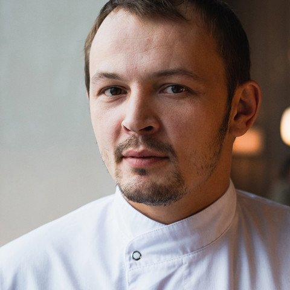

Наші Шефи-Кухарі

Іван Бразил
Шеф-кухар з 4-річним досвідом роботи в ресторанах України та Європи.
Денис Беленко
Шеф-кухар з 2-річним досвідом роботи в ресторанах України.
Наталия Волошина
Шеф-кухар з 3-річним досвідом роботи в ресторанах України.

Савелий Либкин
Шеф-кухар з 6-річним досвідом роботи в ресторанах України та Європи.
Картопля з сосисками - це класична і проста страва, яку можна приготувати різними способами:
смажене, тушковане або запечене. Ось базовий рецепт смаженої картоплі із сосисками


Салат з омлетом - це смачна та незвичайна страва, яка легко готується і відмінно підходить
для вечері або на святковий стіл. Ось класичний та перевірений рецепт